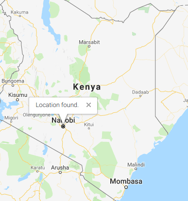

FollowMe
New?
Click Here to Register
Show Location

FollowMe allows the one you care about to keep track of your whereabouts. Easy to use, just send a link and your contact gets a map with your location on it.